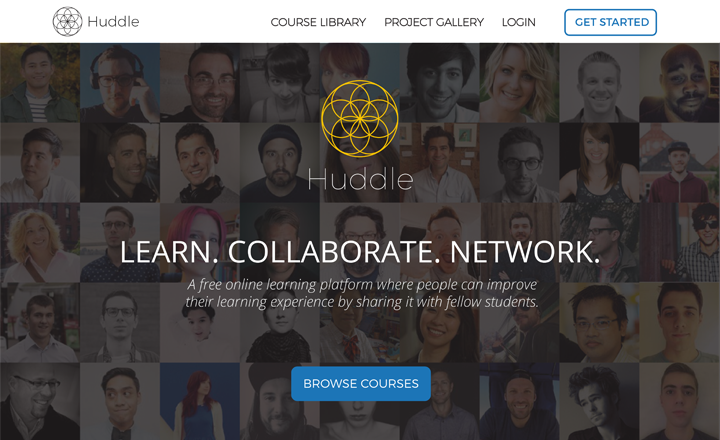
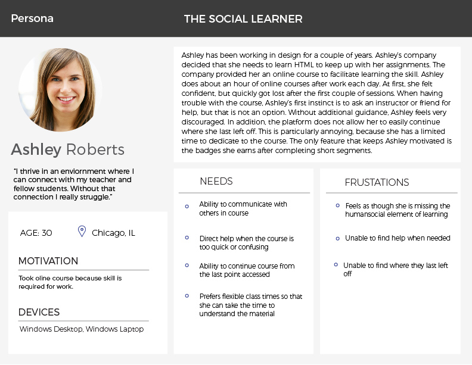

Local Guide

Client
National Kwik Metal
Summary
The Coil Calculator application was created in order to bring an analog tool for calculating metal alloy dimensions into the digital age. The application would serve as an easier and faster alternative to the analog wheel calculator. This was an individual project where I did the UX, UI, and Front-End development.
Background
The company I created this application for worked in the Stainless Steel industry. Their primary focus is selling and distributing stainless steel coils. They wanted me to create a mobile application to replace the analog calculator wheel that they currently used at work. They also wanted me to make the application able to calculate different metal alloys, in addition to stainless steel, so that other companies could use this app too.
Research
Because I was unfarmilar with the Stainless Steel industry I first had to research who was using the calculators and what information was needed in order to perform the calculation. The owner allowed me to

After researching the domain of the project, I decided to interview online learning users about their frustrations and needs they experienced when learning online. I also utilized surveys to gather large amounts of quantitative data that we could use in addition to the qualitative information collected from the user interviews.
Insights
After we had collected all of this data from research, we had to then make sense of it and transform the information into meaningful opportunities. Based off of the key data from our interviews and surveys, I embodied the findings into two user personas. These personas would be used to represent our demographic and remind us of the needs of our users.
Persona 1 - The Social Learner
Key Points:
- Classes must be flexible to fit around her work hours.
- She learns by directly communicating with others.
- The skills she learns must be applicaple to her job.
Persona 2 - The Job Seeker
Key Points:
- Classes must be flexible to fit around her work hours.
- She learns by directly communicating with others.
- The skills she learns must be applicaple to her job.


User Journey
I also created a journey map for our users in order to understand their thoughts and feelings when going through an online learning experience.
Design Principles
One of our key findings was that when users had a question or got stuck they became unmotivated because they were used to having a peer or teacher in the vicinity to answer the question immediately when in a traditional classroom setting. I also discovered that forums were very popular and were enjoyed by most of the users we interviewed because they were not only one way to find answers to problems they had, but also because they felt comfort in knowing that other users were in the same situaton as them. I incorporated these findings into design principles that we would follow when creating the wireframes.

Wireframes
From there I developed an initial hand sketched wireframes that we used to user test our concept. I wanted to implement a way to feel a sense of community. One of the challenges we faced was trying to create a system where users would be in a group and learning the same material, but without sacrificing the time flexibility that online learning excels at.
Our solution was to place users in small groups that would start at a designated week, but the users could complete the material at the course at their own pace. I also designed the huddle button interaction that allowed users to have a central focus for all the group interactions and remind them that they were not alone when going through the course. In addition, this feature could become an enjoyable microinteraction and a brand identity. From there I created wireframes in Axure that we used to continue to test and reiterate on.
Hi-Fidelity Prototype
After several rounds of user testing and iterations, I developed our hi-fidelity prototype.